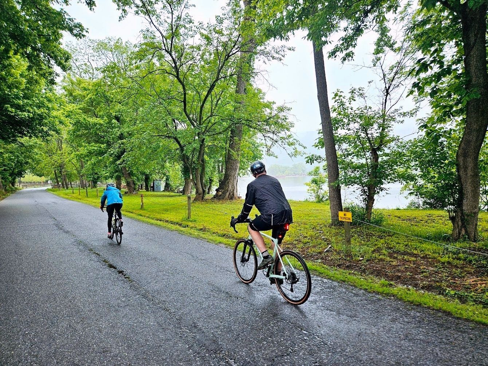

The Shenandoah · In the Rain
Wet pavement, green tunnels, a quiet river on the right. The kind of morning that reminds you why you came.

A morning ride beside the river · somewhere between a downpour and a clearing sky
A Life on the Bike
There is a particular kind of morning that only cyclists understand. You check the weather the night before and it says rain, and you set the alarm anyway. You get up, you make the coffee, you put on the bibs and the jersey and the rain jacket you paid too much money for, and you roll out the door into a world that is still slightly grey and smells of wet asphalt and leaves. Most people are inside. You are not most people.
The photograph above was taken on one of those mornings. The road was wet. The trees were in full early-summer leaf, still dripping. A river ran along the right side, grey and glassy, the far shore lost in mist. Two of us out, riding easy, no particular destination in mind beyond the turnaround point at whatever distance felt right that day. The kind of ride that does not show up in anyone's Strava recap as special and is, in fact, the entire point.
You do not become a cyclist by buying a bike. You become one by going out when the forecast says you shouldn't.
I came to cycling the long way around, the way most of us do — a bike in childhood, a decade or two of other priorities, a return in middle age when the body started sending telegrams about what it would and would not continue to tolerate. What I found the second time was not the bike I remembered. It was something else entirely: a discipline that rewards patience, a sport that can be measured to three decimal places if you want to measure it that way, and a country that looks completely different at twelve miles an hour than it does at sixty.
There is the training, of course. The power meter, the zones, the intervals, the quiet pride of watching a four-week block of work translate into a number that is three watts higher than it was a month ago. VO₂ max creeping up. Functional threshold holding steady into a decade of life when it is supposed to be heading the other way. That part of it is real and I will not pretend otherwise — there is satisfaction in being measured and improving, especially at a point in life when a lot of the measurements are going the wrong direction.
But the measurements are not why I do it. The measurements are the excuse I give myself to keep doing the thing I would be doing anyway.
What I actually love is the road under the tires. The way a long climb quiets everything else down until there is nothing left in the head but breath and cadence. The way a descent on a road you know well is a kind of conversation — the bike asking a question at every corner, your body answering without having to think about it. The way a headwind on the last ten miles home is an honest transaction, paid in full, with no hedge fund layered on top.
And the company, when there is company. The person ahead of you on the road in that photograph is a friend. There is no conversation happening in the frame and there does not need to be. We have already talked about whatever we were going to talk about in the first mile. Now we are just riding, which is its own kind of conversation, slower and steadier than words.
Cycling is also, unapologetically, travel. The bike turns every road into a place you actually saw. I have ridden the dunes above Lake Michigan in a downpour with friends from Wilderness Voyagers. I have ridden across the state of New York three times now with five hundred other riders trying to end cancer, and this summer I will do it for a fourth — the only centuries I have ever ridden have come on those Empire State Ride days, back-to-back, one after the next, Buffalo to New York City. Closer to home, I ride the Chautauqua Gran Fondo each August around my home lake in Mayville — not the hundred-mile route, not yet, but the course I know better than any other road in the world. Every one of those rides is a photograph I took with my legs.
The morning in the picture was not any of those rides. It was an ordinary day on an ordinary stretch of road on a trip that happened to be near a river. But the ordinary rides are the ones that add up. The memorable rides are the vacation you take once. The ordinary rides are the life.
Two wheels. A wet road. A friend up ahead. A river on the right. That is enough for a morning. Some mornings it is enough for an entire life.
Kit & Equipment
Endurance geometry is not a compromise — it is an admission of honesty. The body over fifty deserves a bike that meets it where it is, not where it was at thirty. Long top tubes and slack head angles make the miles possible.
Electronic shifting is one of those technologies you resist until you try it, and then you do not go back. The click is gone; in its place is a whisper. The bike does what you ask and stops asking follow-up questions.
Numbers do not lie. The power meter is a coach who never flatters and never scolds — it simply tells you, in real time, exactly how much work you are doing. Training by feel is poetry. Training by power is engineering. I want both.
Thirty-millimeter tires at seventy psi on a wet morning like the one in this photograph are the difference between a ride you finish with a smile and a ride you finish on the phone with the insurance adjuster. Grip is humility in rubber form.
The Rides
Sleeping Bear Dunes in the rain, with Wilderness Voyagers. A day that started grey and ended radiant.
Buffalo to New York City — seven days, five hundred riders, a century every day, and one simple reason to keep pedaling. Four rides and counting.
The home race. Each August around the lake I have known my whole life — not the hundred-mile route, not yet. Page to come after ride day.
The ride in the photograph above. A wet road, a quiet river, a good friend out front. Page to come.